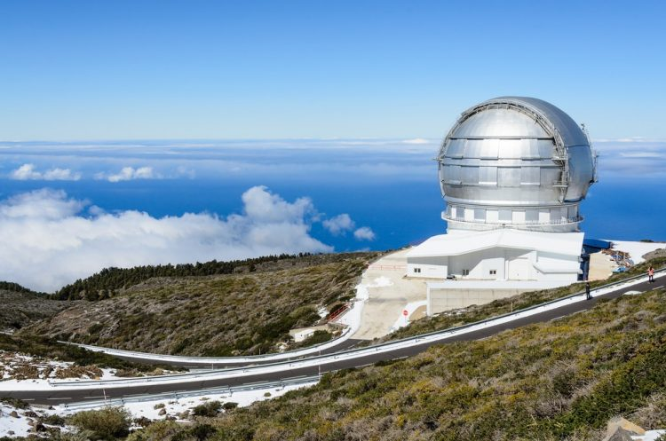

БОЛЬШОЙ КАНАРСКИЙ ТЕЛЕСКОП
2007
Расположена на пике потухшего вулкана Мучачос на высоте около 2400 метров выше уровня моря, на Канарском острове Пальма. Наряду с обсерваториями Гаваев и Чили, является одним из лучших мест на Земле с точки зрения астроклимата. Она расположена выше атмосферного слоя, для которого характерно интенсивное формирование облаков, что позволяет, практически всегда, вести наблюдения на чистом небосводе.
В 2007 году введен в строй Большой Канарский телескоп — оптический телескоп-рефлектор с самым крупным зеркалом в мире. Его первичное шестиугольное зеркало, с эквивалентным диаметром 10,4 метра, составлено из 36 шестиугольных сегментов, изготовленных из ситаллов Zerodur, производства компании Schott AG. Оснащён активной и адаптивной оптикой. Он видит объекты в миллиард раз более слабые, чем те, что видит невооружённый человеческий глаз.